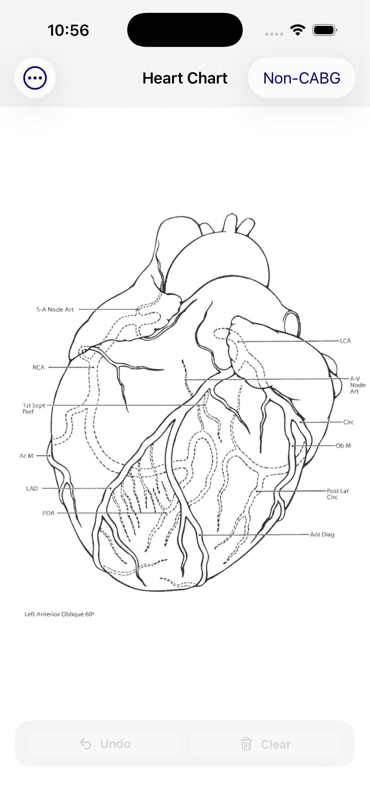
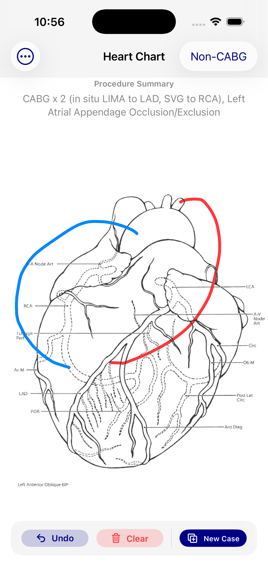

Draw CABG grafts
Illustrate bypass graft configuration directly on a heart diagram for a quick, visual summary of the case.
Cardiac surgery case illustration
HeartChart helps you build clear operative-style heart diagrams on iPhone. Create CABG graft maps, document adjunct procedures, and generate shareable PDFs.


Features
HeartChart is designed for straightforward capture of operative-style coronary anatomy and related procedures.
Illustrate bypass graft configuration directly on a heart diagram for a quick, visual summary of the case.
Include valve or other associated procedures so the case record reflects more than grafting alone.
Export a polished PDF that can be reviewed, saved, or shared as part of your workflow.
Simple workflow
Start with the heart diagram and add the graft configuration.
Document associated non-CABG procedures for a fuller case summary.
Create a PDF version of the case for distribution or record keeping.
Get HeartChart
Download HeartChart and start creating visual cardiac surgery case summaries.
HeartChart is a visualization and documentation tool designed to illustrate cardiac surgical procedures. It is not intended to provide medical advice, diagnosis, or treatment recommendations and should not be used for clinical decision-making.
Users are responsible for ensuring that any information entered into the app complies with applicable patient privacy and confidentiality requirements.